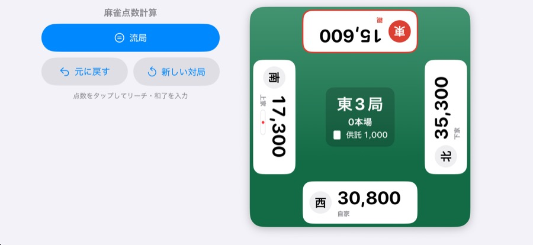
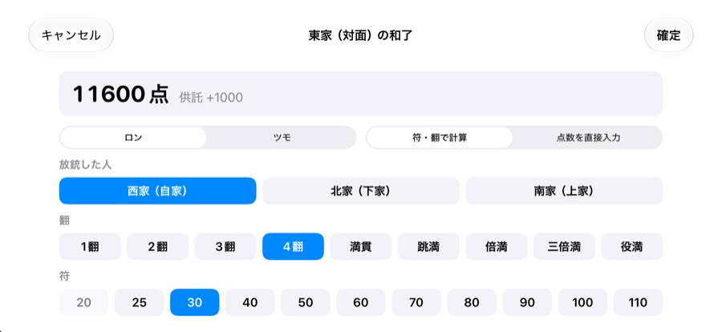

麻雀点数計算
iPhoneを卓の真ん中に置いて使う、麻雀の点数表示アプリです。符と翻を選ぶだけで和了点を計算し、本場・供託・親の移動まで自動で処理します。点棒がなくても、点数計算に自信がなくても遊べます。
iPhone・iPad（iOS 16.4以降）・横向きで使います


できること
- 符・翻から自動計算：ロン／ツモ、振り込んだ人、翻と符を選ぶだけ。満貫〜役満にも対応し、本場と供託も自動で加えます。
- 局と親の自動進行：「東1局」から局が進み、親の和了は連荘、子の和了は親流れを自動で処理します。
- 流局もかんたん：聴牌した人を選ぶと、不聴罰符3000点を自動で配ります。リーチ棒は供託として持ち越します。
- 4人それぞれの向きで表示：卓の中央に置くと、各自の点数が自分の向きで読めます。
- 自動保存と取り消し：アプリを閉じても続きから。入力ミスは「元に戻す」で1つずつ取り消せます。
使い方
- 「新しい対局」で持ち点（25000点／30000点）と最初の親を選びます。
- リーチや和了は、その人の点数をタップして入力します。
- 流局したら「流局」を押して、聴牌した人を選びます。
よくある質問
入力を間違えました
画面左の「元に戻す」を押すと、直前の入力から1つずつ取り消せます。
ローカルルールの点数に対応していますか
和了の入力で「点数を直接入力」を選ぶと、任意の点数を移動できます。
アプリを閉じると点数は消えますか
消えません。点数・局・本場・供託は自動で保存され、次に開いたときに続きから使えます。新しく始めるときは「新しい対局」を押してください。
便利な早見表
麻雀 点数早見表：符と翻から、子・親のロン・ツモの点数を一覧で
お問い合わせ
メール: tanacount.support@gmail.com
返信までお時間をいただく場合があります。
ほかのアプリ
麻雀何切る問題：何切る問題を自動で出題。打牌ごとの受け入れ枚数で解説、今日の5問つき
麻雀待ち判定：手牌から待ち牌・役・符・点数がわかる。打牌候補と役一覧つき
麻雀成績表：セット麻雀の精算・通算成績・局ごとのグラフ、iCloudで同卓者と共有
麻雀点数計算ドリル：翻と符から点数を4択で答える、点数計算の練習問題アプリ
棚卸カウンター：JANバーコードを読み取って、小さなお店の在庫を数えるiPhoneアプリ
補助金ウォッチ：受付中の補助金・助成金を探して、申請締切の前に通知するiPhoneアプリ